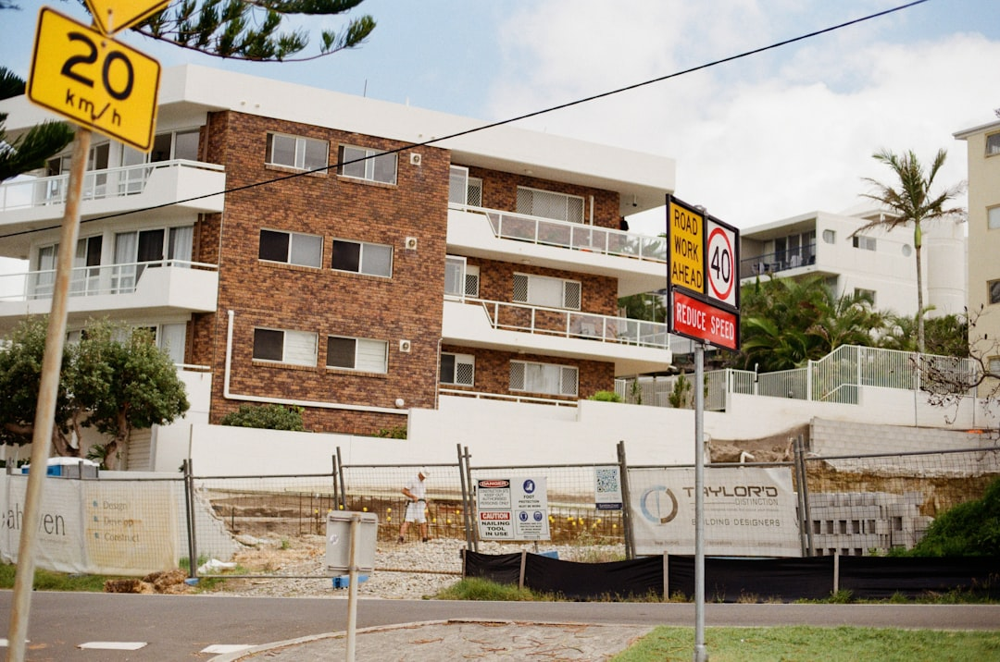

A useful comparison starts with the written split between the solicitor's professional fee and the extra costs around a property transfer. Brisbane Conveyancers says routine professional fees are typically a few hundred to around a thousand dollars, with government charges and disbursements added separately, and quotes available within 24 hours. For many Queensland residential contracts, timing is also critical because cooling off is usually 5 business days, auction purchases have none, and ending during cooling off can cost up to 0.25% of the purchase price.
For buyers and sellers weighing conveyancing services brisbane options, the practical question is whether the solicitor's written scope matches the contract, the property type and the dates that will control settlement.
Conveyancing Services Brisbane Explained
Brisbane Conveyancers describes fixed fee property settlement handled by Queensland Law Society member solicitors, from contract review to settlement day. The published summary identifies the work that usually drives scope, reviewing the contract, running title and property searches, calculating transfer duty, liaising with the lender and completing settlement through PEXA. A quote is easier to compare when those tasks are stated plainly.
The same source separates the professional fee from government charges, searches and transfer duty. That written split matters because two firms can look close on price while taking very different positions on search costs, pre signing advice or settlement administration. Ask for the professional fee, disbursements and excluded work as separate items before you decide.
- Check whether pre signing contract review is included.
- Ask which searches are expected on the file.
- Confirm whether PEXA settlement is part of the quoted work.
Timing changes the legal brief
The published FAQ says most Queensland residential contracts have a 5 business day cooling off period starting when the contract is signed by both parties and received. It also says that ending the contract during that period can bring a penalty of up to 0.25% of the purchase price. That makes early review important where finance dates, special conditions or property searches may affect the decision to proceed.
Auction files need earlier action. The source states that auction purchases do not have a cooling off period, so review should happen before bidding. Off the plan matters also need careful reading because the service page refers to sunset clauses and disclosure rules for property bought before construction is finished. If your issue is mainly the contract before signing, compare that need with first home buyer contract review in Brisbane.
Buyer, seller and first home files differ
On a purchase, the source describes work around contract review, searches, transfer duty, lender liaison and settlement. That means a buyer should ask who is responsible for each step and when advice is expected, especially if finance approval or search results could affect the next decision. A short quote with no workflow detail can hide delays later.
On a sale, the same source points to contract preparation, mandatory Form 2 seller disclosure and settlement. For sellers, document readiness can matter as much as the fee, because delays in preparing the contract or disclosure can slow negotiations once a buyer is interested.
First home buyers have an added layer. The source says solicitors can guide clients through transfer duty concessions, the First Home Owner Grant and the steps to settlement. It also says the Queensland First Home Owner Grant is currently $30,000 for an eligible new home valued under $750,000 for contracts signed between 20 November 2023 and 30 June 2026, and is scheduled to return to $15,000 from 1 July 2026. The safe approach is to treat that figure as a starting point for eligibility checks, not a budget assumption.
Less routine matters need scoped questions
Some matters need more than a standard residential settlement brief. The published services mention commercial property work involving leases, GST, due diligence and commercial settlement. In that setting, a quote only helps if it states whether lease review or due diligence is included, because those items can shape the file rather than sit at the edges of it.
The source also refers to title transfers within the family. Even when there is no open market sale, there may still be transfer documents, settlement steps and duty related administration to organise. Instead of assuming the matter is simple, ask what documents are needed before the solicitor can confirm whether the file is routine and whether the fixed professional fee still applies without adjustment.
Who this applies to, and what to prepare
This guide is most useful for Brisbane buyers and sellers deciding whether the matter is straightforward or whether the contract needs earlier legal attention. It is especially relevant for auction buyers, off the plan purchasers, sellers who need Form 2 disclosure prepared, first home buyers checking concessions and grants, families arranging a title transfer, and parties dealing with commercial premises.
Before asking for a quote, prepare the facts that affect scope. State whether you are buying or selling, whether a lender is involved, whether the contract has already been signed, whether the property is residential or commercial, and whether timing pressure comes from auction, disclosure preparation or pre construction terms. Brisbane Conveyancers says quote enquiries can be made with project details and that a free fixed fee quote is available within 24 hours, so fuller information gives you a better comparison from the start.
- Describe the transaction. State whether the matter is a purchase, sale, auction, off the plan file, first home purchase, family transfer or commercial transaction.
- Request a written split. Ask for the professional fee, disbursements and excluded work as separate written items.
- Flag timing pressure. Tell the solicitor if the contract is already signed, the property is heading to auction or pre construction clauses need review.
- Confirm responsibility. Check who will handle searches, lender contact, PEXA steps and settlement dates.
| Scenario | What changes | Question to ask |
|---|---|---|
| Standard purchase | Searches, duty, lender liaison and PEXA are central | Which of those items sit inside the professional fee? |
| Auction purchase | Review must happen before bidding | Can the contract be checked before auction day? |
| Off the plan purchase | Sunset clauses and disclosure rules need early review | Which documents and dates need attention before signing? |
| Property sale | Contract preparation and Form 2 disclosure affect timing | When will the sale documents be ready? |
| Commercial matter | Leases, GST and due diligence may expand the file | Are lease review and due diligence included? |
Common questions
What does a routine Brisbane conveyance usually cost? Brisbane Conveyancers says professional fees for a routine Brisbane conveyance are typically a few hundred to around a thousand dollars. It also says government charges and disbursements such as title searches and registration are additional and vary by property.
What changes when the property is going to auction? The published service page says auction purchases do not have a cooling off period, so the contract should be reviewed before you bid. That shifts the legal work earlier than it would on many private treaty purchases.
How quickly can a quote be provided? The source page says a free fixed fee quote is available within 24 hours. A fuller enquiry usually gives the solicitor a better basis to state the scope clearly.
This guide covers how to compare legal scope, timing and written costs for Brisbane property settlement matters.